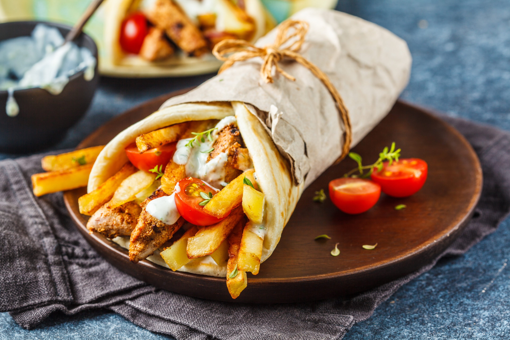

Description
Like Kabobs, the word Souvlaki simply means “meat on skewers.” But Greeks
also use it to describe the actual meal—warm pita, loaded with perfectly
marinated grilled meat and topped with Tzatziki sauce. Other fixings are
typically included, and even a handful of fries are tucked into the pita.
What goes into this souvlaki recipe? Three simple things: an awesome Greek
souvlaki marinade, quality chicken, and the pita fixings.
Ingredients
- 500 g chicken breast, cut into pieces
- 4 tablespoons extra virgin olive oil
- 1 lemon (juice and zest)
- teaspoon oregano
- teaspoon thyme
- ½ bunch of parsley
- pepper
- salt
Steps
-
First, cut the chicken into pieces of the same size, as much as
possible, and put them in a large bowl.
-
Then, in a blender, add the extra virgin olive oil, parsley, pepper,
lemon juice and zest, oregano and thyme and mash.
-
Then pour the chicken over the marinade, mix well and leave for 15-20
minutes. At the end add the salt and mix again.
-
While the chicken is marinating, you can cut the onion into slices, the
tomato into pieces and prepare the french fries.
-
Thread the chicken pieces in the metal straws and bake them in the
barbecue or in the grill pan.
-
When the skewers are ready, you can serve them in two ways:
-
either remove the skewer and wrap it with the baking paper in a
pita, adding onion, tomato, fries and tzatziki
-
either serve them as a portion with the pita cut on the plate and
the vegetables, the fries and the tzatziki next to the meat!